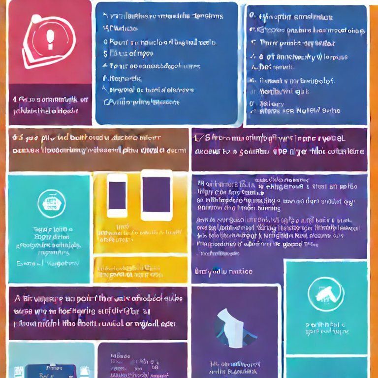
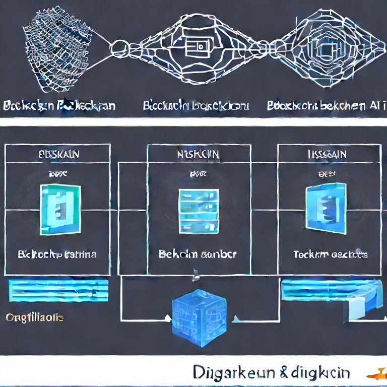

Key Features
BitWarranty offers a suite of features designed to make warranty management easier and more efficient. With our platform, users can access digital warranties from multiple manufacturers in one place, making it simpler to keep track of all their purchased products. Our smart contract technology ensures that all terms and conditions are automatically enforced, reducing the likelihood of disputes. Additionally, our real-time notifications keep users informed about important warranty updates and expiry dates. Businesses benefit from a streamlined process for verifying and processing claims, significantly enhancing customer satisfaction and loyalty. By integrating these advanced features, BitWarranty provides a comprehensive solution that meets the needs of both consumers and businesses in the warranty ecosystem.
Advanced Technology
Our platform utilizes cutting-edge blockchain and AI technologies to deliver a superior warranty management experience. Blockchain ensures that all warranty transactions are secure, transparent, and immutable. This technology eliminates the risk of tampering and fraud, providing a reliable record of all warranty details. Additionally, our AI-powered insights help users make informed decisions based on data analytics. These insights include predictive maintenance alerts, warranty claim trends, and product performance metrics. By leveraging these advanced technologies, BitWarranty not only enhances security but also offers valuable insights that drive better decision-making for both consumers and businesses.
Top-Notch Security
Security is at the core of BitWarranty's offerings. Our platform uses robust encryption and decentralized storage to protect sensitive warranty information. Every transaction is securely recorded on the blockchain, ensuring that data is tamper-proof and verified by a distributed network. This approach safeguards against unauthorized access and fraud, giving users peace of mind that their warranty details are secure. We also implement rigorous authentication mechanisms to ensure that only authorized users can access and manage warranties. By prioritizing security, BitWarranty builds trust and confidence among its users, setting a new standard in the warranty industry.